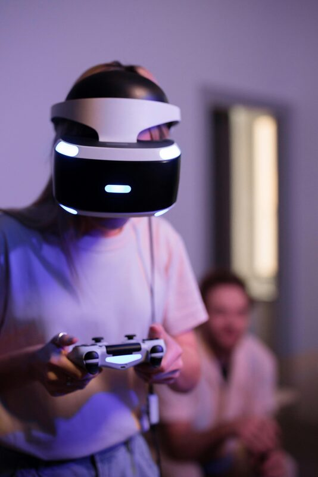

Siempre innovando
PlayStation 5 lleva la inmersión a otro nivel con el DualSense — vibración háptica y gatillos adaptativos que hacen sentir cada disparo, cada aceleración, cada impacto. Títulos exclusivos de talla mundial como God of War, Spider-Man y Horizon convierten a PlayStation en el hogar de las mejores experiencias narrativas del videojuego.
✦ PS5 · PS4 · DualSense · PlayStation VR2 · Exclusivos